Elegir
Tema, escala, material, complejidad, presupuesto y espacio.
Mundo a Escala · e-book + 5 bonos
Convierte tu curiosidad por el modelismo plástico en tu primer modelo terminado, incluso si todavía no sabes qué kit, herramientas o materiales elegir.
Acceso digital · 53 páginas · 5 bonos · Garantía de 15 días
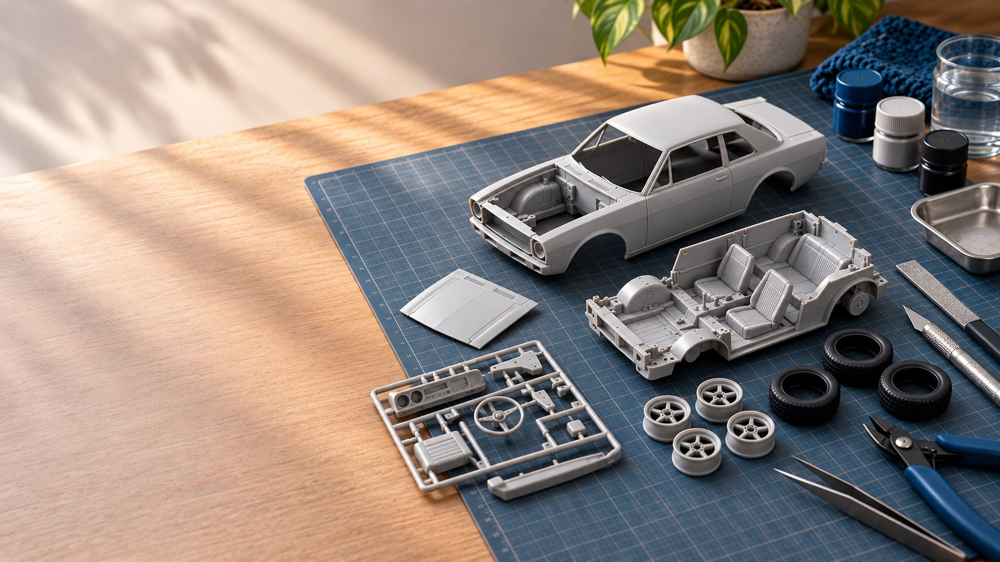
Cuando empezar parece complicado
Frente al primer kit aparecen demasiadas decisiones al mismo tiempo: escala, herramientas, pegamento, pintura, orden de montaje y miedo a estropear una pieza.
Escala Cero organiza esas decisiones en una secuencia comprensible. No promete perfección instantánea: te ayuda a avanzar con criterio, reconocer errores y terminar aprendiendo.
La meta no es un primer modelo perfecto. Es un primer modelo terminado con decisiones conscientes.
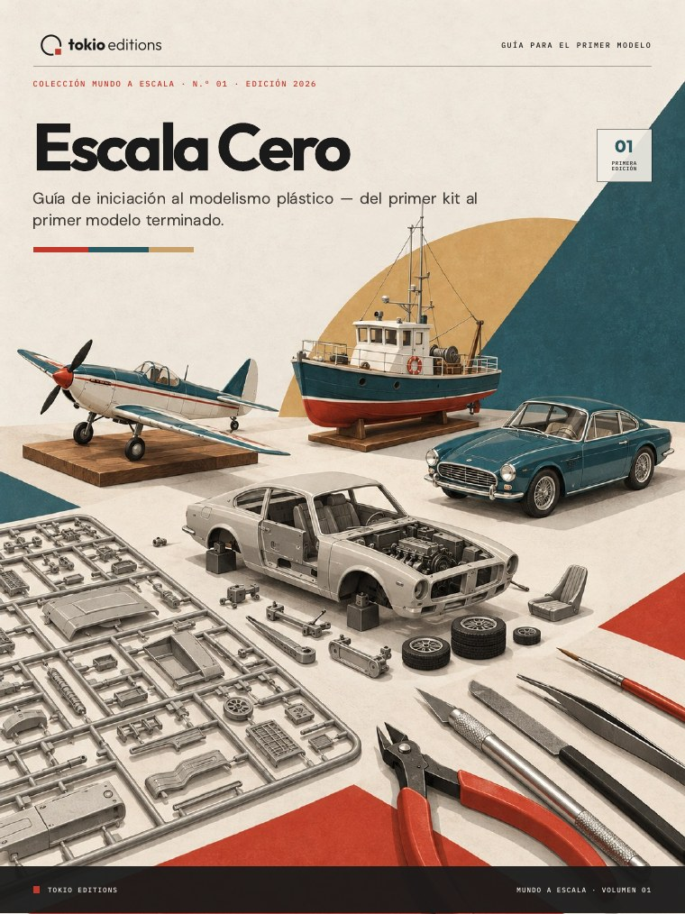
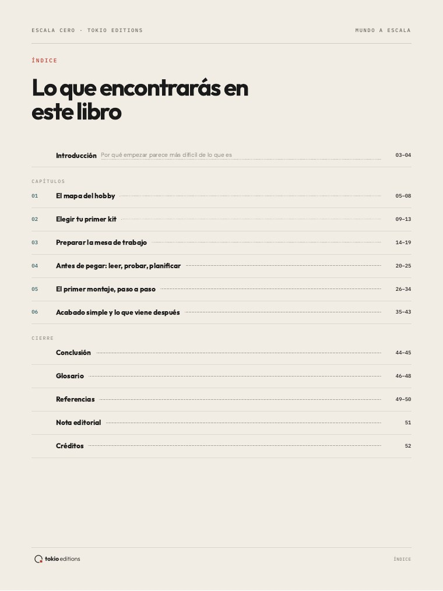
Una guía para usar en la bancada
El recorrido acompaña a quien nunca montó un kit y también a quien desea retomar el hobby sin depender de explicaciones dispersas.
Del primer kit al primer modelo
Cada decisión prepara la siguiente. El método orienta el proyecto sin convertirlo en una secuencia rígida.
Tema, escala, material, complejidad, presupuesto y espacio.
Mesa, herramientas, iluminación, limpieza y seguridad.
Manual, inventario, secuencia y pruebas antes de pegar.
Separar, limpiar, probar, unir, alinear y dejar curar.
Preparar superficies, aplicar color, marcas y protección.
Reconocer lo aprendido y preparar el próximo proyecto.
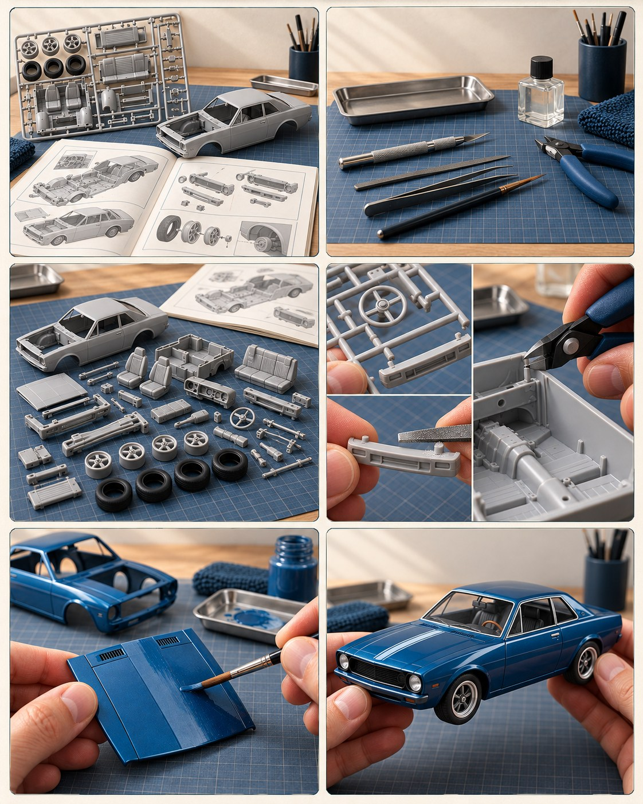
Mira antes de comprar
Sin interfaces simuladas: estas imágenes provienen del PDF que recibirás.
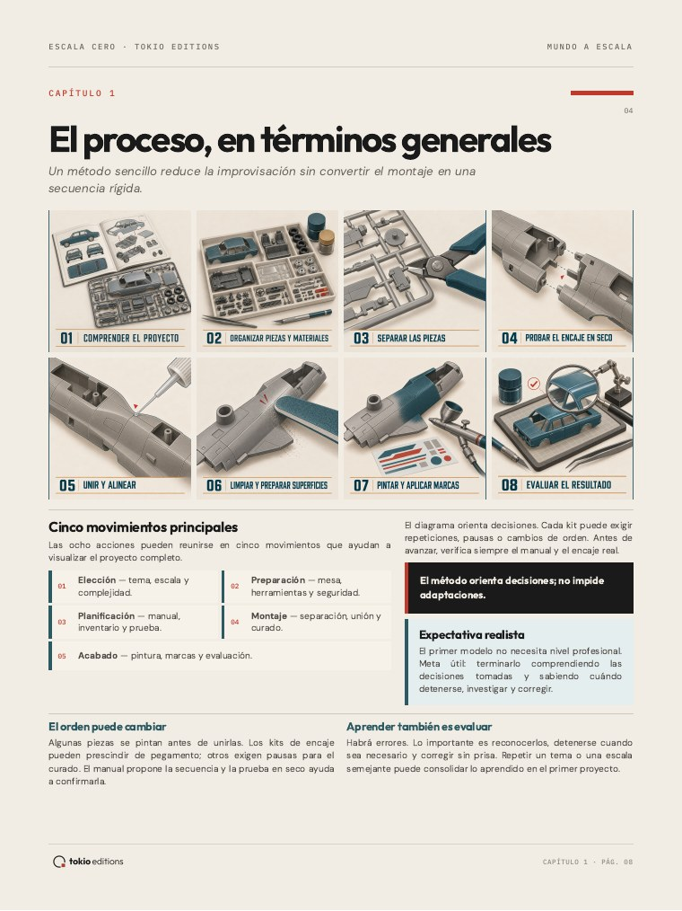
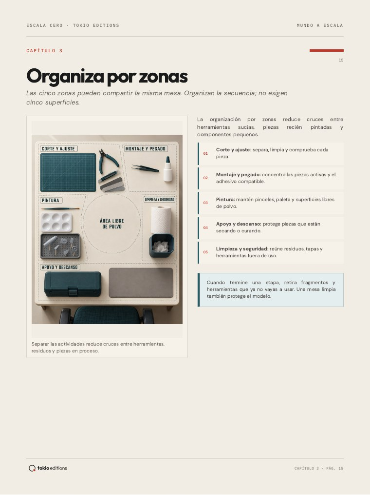
Materiales complementarios
Herramientas prácticas para elegir, organizar, registrar y retomar el proyecto sin perder decisiones importantes.
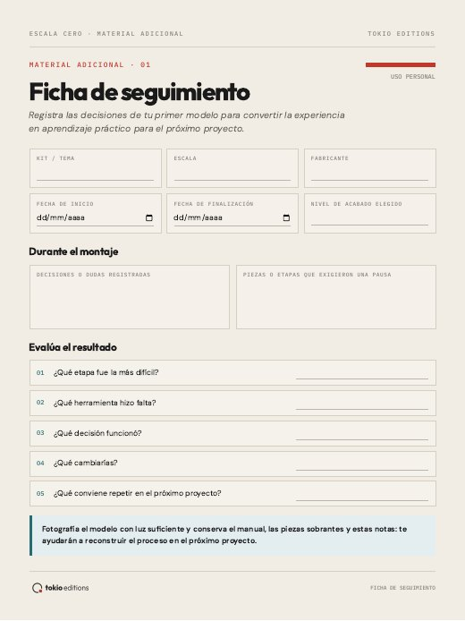
Registra decisiones, productos, dificultades y aprendizajes de cada proyecto.
Imprimible + rellenable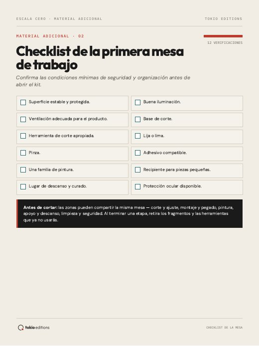
Prepara una zona funcional, segura y fácil de reorganizar.
Imprimible + rellenable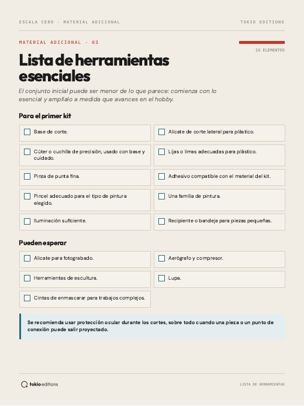
Distingue lo esencial de lo que puede esperar para otro proyecto.
Imprimible + rellenable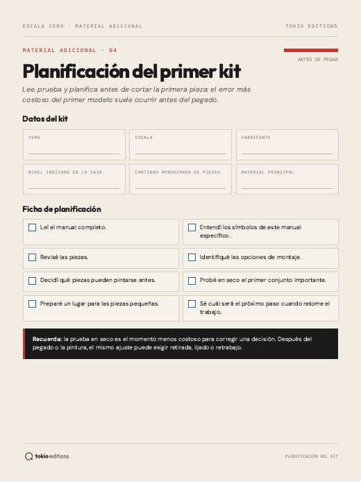
Anticipa materiales, etapas, pausas y puntos de atención.
Imprimible + rellenable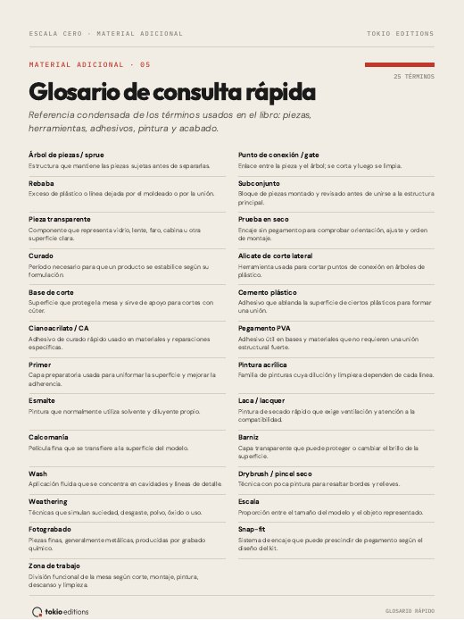
Consulta los términos más frecuentes sin interrumpir el montaje.
PDF de consultaEscala Cero es para ti si...
No es un manual de técnicas avanzadas ni promete un acabado profesional en el primer intento.
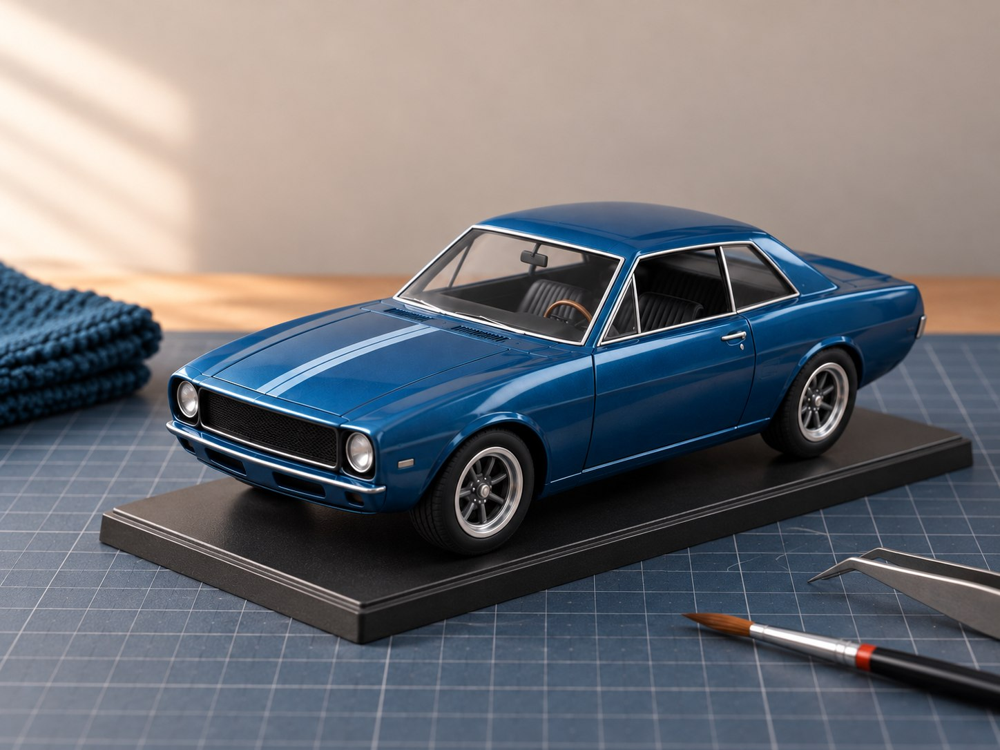
Acceso digital inmediato
Compra y entrega procesadas por Hotmart · Garantía de 15 días
Dudas frecuentes
Información directa, sin letras pequeñas.
El e-book Escala Cero con 53 páginas y cinco bonos: Ficha de seguimiento, Lista de verificación de la mesa, Lista de herramientas, Planificación del kit y Glosario rápido. Los cuatro primeros también incluyen versión rellenable.
No. El contenido fue creado para principiantes, personas curiosas y adultos que están retomando el hobby.
No. El libro diferencia lo esencial de lo que puede esperar y ayuda a planificar según el kit, el espacio y el presupuesto.
El e-book y los bonos se entregan como archivos PDF digitales. Podrás leerlos en celular, tablet o computadora, y los materiales prácticos podrán imprimirse.
Después de confirmar el pago, Hotmart enviará las instrucciones de acceso al correo utilizado en la compra.
Sí. La compra cuenta con una garantía de 15 días, conforme a las condiciones presentadas en el checkout.
La página presenta el valor de referencia de US$ 11,90. El checkout informa los medios de pago y la conversión disponible para tu moneda local.
Sello editorial contemporáneo
Escala Cero inaugura la colección Mundo a Escala, de tokio editions: contenido claro, dirección visual cuidadosa y herramientas para transformar curiosidad en práctica.